전산응용기계제도기능사 (2011-04-17 기출문제)
1과목: 기계재료 및 요소
1. 에너지 흡수 능력이 크고, 스프링 작용 외에 구조용 부재기능을 겸하고 있으며, 재료가공이 용이하여 자동차 현가용으로 많이 사용하는 스프링은?
- 공기 스프링
- 겹판 스프링
- 코일 스프링
- 태엽 스프링
(정답률: 59%)

2. 자동차용 신소재인 파인세라믹스(fine ceramics)에 대한 설명 중 틀린 것은?
- 가볍다.
- 강도가 강하다.
- 내화학성이 우수하다.
- 내마모성 및 내열성이 우수하다.
(정답률: 39%)
3. 증기나 기름 등이 누출되는 것을 방지하는 부위 또는 외부로부터 먼지 등의 오염물 침입을 막는데 주로 사용하는 너트는?
- 캡 너트(cap nut)
- 와셔붙이 너트(washer based nut)
- 둥근 너트(circular nut)
- 육각 너트(hexagon nut)
(정답률: 73%)
4. 에너지를 소멸하고 충격, 진동 등의 진폭을 경감시키기 위해 사용하는 장치는?
- 차음재
- 로프(rope)
- 댐퍼(damper)
- 스프링(spring)
(정답률: 46%)
5. 나사의 피치가 일정할 때 리드(lead)가 가장 큰 것은?
- 4줄 나사
- 3줄 나사
- 2줄 나사
- 1줄 나사
(정답률: 81%)
6. 베어링의 재료가 구비할 성질이 아닌 것은?
- 가공이 쉬울 것
- 부식에 강할 것
- 충격하중에 강할 것
- 피로강도가 작을 것
(정답률: 71%)
7. 항온 열처리 방법에 포함되지 않는 것은?
- 오스템퍼
- 시안화법
- 마퀜칭
- 마템퍼
(정답률: 59%)
8. 주조시 주형에 냉금을 삽입하여 주물 표면을 급냉시킴으로 백선화하고 경도를 증가시킨 내마모성 주철은?
- 보통주철
- 고급주철
- 합금주철
- 칠드주철
(정답률: 68%)
9. 가스 질화법으로 강의 표면을 경화하고자 할 때 질화효과를 크게 하는 원소는?
- 코발트
- 니켈
- 마그네슘
- 알루미늄
(정답률: 28%)
10. 묻힘키(sunk key)에 관한 설명으로 틀린 것은?
- 기울기가 없는 평행 성크 키도 있다.
- 머리 달린 경사 키도 성크 키의 일종이다.
- 축과 보스의 양쪽에 모두 키 홈을 파서 토크를 전달시킨다.
- 대개 윗면에 1/5정도의 기울기를 가지고 있는 수가 많다.
(정답률: 54%)
2과목: 기계가공법 및 안전관리
11. 단면적이 20㎟인 어떤 봉에 100kgf의 인장하중이 작용할 때 발생하는 응력은?
- 2kgf/㎟
- 5kgf/㎟
- 20kgf/㎟
- 50kgf/㎟
(정답률: 71%)
12. 접촉면의 압력을 p, 속도를 v, 마찰계수가 μ일 때 브레이크 용량(brake capacity)을 표시하는 것은?
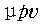
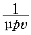
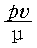
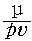
(정답률: 49%)
13. 내열강에서 내열성, 내마모성, 내식성 등을 증가시키기 위해 첨가되는 대표적인 원소는?
- 크롬(Cr)
- 니켈(Ni)
- 티탄(Ti)
- 망간(Mn)
(정답률: 51%)
14. 나사산과 골이 같은 반지름의 원호로 이은 모양이 둥글게 되어 있는 나사는?
- 볼나사
- 톱니나사
- 너클나사
- 사다리꼴나사
(정답률: 35%)
15. 탄소강 중 함유되어 헤어크랙(hair crack)이나 백점을 발생하게 하는 원소는?
- 규소(Si)
- 망간(Mn)
- 인(P)
- 수소(H)
(정답률: 69%)
16. 일감에 회전 절삭운동을 주어 가공하는 공작기계는?
- 선반
- 드릴링 머신
- 밀링 머신
- 보링 머신
(정답률: 66%)
17. 다음 윤활제 중 비산 및 유출되지 않고, 급유횟수가 적고 경제적이며, 사용온도 범위가 넓고, 장시간 사용에 적합한 것은?
- 극압 유
- 그리스
- 기계 유
- 스핀들 유
(정답률: 53%)
18. 선반가공에서 테이퍼 절삭 시 복식 공구대의 선회값은 얼마인가?
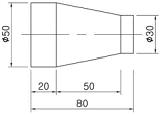
- 3
- 2
- 0.5
- 0.2
(정답률: 28%)
19. 길이가 짧은 가공물을 절삭하기 편리하며, 베드의 길이가 짧고, 심압대가 없는 경우가 많은 선반은?
- 터릿선반
- 릴리빙선반
- 정면선반
- 보통선반
(정답률: 40%)
20. 선반에서 절삭속도가 20m/min로 지름 30㎜의 연강을 가공할 때, 스핀들의 회전수는 몇 rpm 정도인가?
- 132
- 477
- 212
- 666
(정답률: 55%)
21. 버니어 캘리퍼스(vernier callipers)에서 어미자의 한 눈금이 1㎜이고, 아들자의 눈금 19㎜를 20등분 한 경우 최소 측정치는 몇 ㎜ 인가?
- 0.01㎜
- 0.02㎜
- 0.⑤㎜
- 0.1㎜
(정답률: 46%)
22. 그림에서 더브테일 ø10 핀을 이용하여 측정할 때 M의 길이는 약 얼마인가?
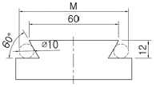
- 45.36㎜
- 60.65㎜
- 73.46㎜
- 94.56㎜
(정답률: 72%)
23. 절삭가공을 위하여 기계를 운전하기 전에 점검하여야 할 사항으로 틀린 것은?
- 기계 작동면의 급유 상태
- 백래시와 공작 정밀도 검사
- 볼트, 너트 등의 풀림 상태
- 안전장치와 동력 전달 장치의 작동 상태
(정답률: 66%)
24. 밀링 절삭조건 중 테이블의 이송속도를 구하는 식은? (단, f는 테이블의 이송속도, fz는 커터의 절삭날 1개마다의 이송, z는 커터의 날수, n은 회전수이다.)
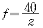
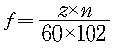
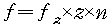
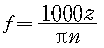
(정답률: 61%)
25. 래핑(lapping)의 장점에 해당되지 않는 것은?
- 정밀도고 높은 제품을 가공할 수 있다.
- 가공면은 윤활성 및 내마모성이 좋다.
- 작업이 용이하고 먼지가 적다.
- 가공면이 매끈한 거울면을 얻을 수 있다.
(정답률: 60%)
3과목: 기계제도
26. 아래와 같은 구멍과 축의 끼워 맞춤에서 최대 틈새는?
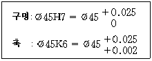
- 0.018
- 0.023
- 0.⑤0
- 0.027
(정답률: 75%)
27. 다음 투상방법 설명 중 틀린 것은?
- 경사면부가 있는 대상물에서 그 경사면의 실형을 표시할 때에는 보조투상도로 나타낸다.
- 그림의 일부를 도시하는 것으로 충분한 경우에는 부분투상도로서 나타낸다.
- 대상물의 구멍, 홈 등 한 부분만의 모양을 도시하는 것으로 충분한 경우에는 그 필요한 부분만을 회전 투상도로서 나타낸다.
- 특정 부분의 도형이 작은 이유로 그 부분의 상세한 도시나 치수기입을 할 수 없을 때에는 부분 확대도로 나타낸다.
(정답률: 68%)
28. 다음 중 끼워 맞춤에서 치수기입 방법으로 틀린 것은?
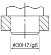
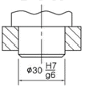
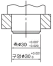
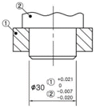
(정답률: 56%)
29. 다음 중 스케치도를 작성하는 방법이 아닌 것은?
- 프리핸드법
- 방사선법
- 본뜨기법
- 프린트법
(정답률: 80%)
30. 가공에 사용하는 공구나 지그 등의 위치를 참고로 도시할 경우에 사용되는 선은?
- 굵은 파선
- 가는 2점 쇄선
- 가는 파선
- 굵은 1점 쇄선
(정답률: 60%)
31. 다음과 같이 원뿔을 경사지게 자른 경우의 전개 형태로 올바른 것은?
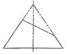
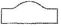
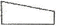
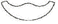
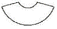
(정답률: 52%)
32. 치수기입 원칙 중 맞지 않는 것은?
- 치수는 되도록 주투상도에 집중한다.
- 치수는 가능한 중복 기입을 한다.
- 관련되는 치수는 되도록 한 곳에 모아서 기입한다.
- 치수와 함께 특별한 제작 요구사항을 기입할 수 있다.
(정답률: 87%)
33. 한국 산업 표준 중 기계부문에 대한 분류 기호는?
- KS A
- KS B
- KS C
- KS D
(정답률: 88%)
34. 줄무늬 방향의 기호에서 가공에 의한 커터의 줄무늬가 여러 방향으로 교차될 때 나타내는 기호는?
- R
- C
- F
- M
(정답률: 76%)
35. 길이가 50㎜인 축을 도면에 5:1 척도로 그릴 때 기입되는 치수로 옳은 것은?
- 10
- 250
- 50
- 100
(정답률: 55%)
36. 리브(rib), 암(arm) 등의 회전도시 단면을 도형 내의 절단한 곳에 겹쳐서 나타낼 때 사용하는 선은?
- 굵은 실선
- 굵은 1점쇄선
- 가는 파선
- 가는 실선
(정답률: 40%)
37. 축의 끼워맞춤에 사용되는 IT공차의 급수에 해당하는 것은?
- IT 01 ~ IT 4
- IT 01 ~ IT 5
- IT 5 ~ IT 9
- IT 9 ~ IT 10
(정답률: 65%)
38. 다음 치수 보조기호 표시 중 의미가 잘못 표시된 것은?
- S∅ : 구의 지름
- SR : 구의 반지름
- C : 45° 모떼기
- (20) : 완성치수 20
(정답률: 86%)
39. 주로 금형으로 생산되는 플라스틱 눈금자와 같은 제품 등에 제거 가공 여부를 묻지 않을 때 사용되는 기호는?
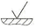
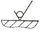
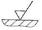
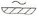
(정답률: 60%)
40. 다음은 어떤 물체를 제3각법으로 투상하여 정면도와 우측면도를 나타낸 것이다. 평면도로 옳은 것은?
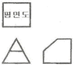
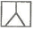
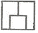
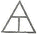
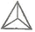
(정답률: 80%)
41. 기하 공차의 기호 연결이 옳은 것은?
- 진원도 :
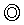
- 원통도 :
- 위치도 :
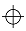
- 진직도 :
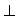
(정답률: 76%)
42. 다음은 제3각법으로 투상한 투상도이다. 입체도로 알맞은 것은? (단, 화살표 방향이 정면도이다.)
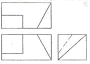
(정답률: 77%)
43. 한국산업표준에서 정한 도면에 사용하는 선 굵기의 기준이 아닌 것은?
- 0.18㎜
- 0.35㎜
- 0.75㎜
- 1㎜
(정답률: 48%)
44. 다음 등각 투상도에서 화살표 방향을 정면도로 할 경우 평면도로 올바른 것은?
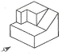
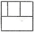
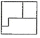
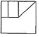
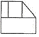
(정답률: 77%)
45. 다음 공차 기입의 표시방법 중 복수의 데이텀(datum)을 표시하는 방법으로 올바른 것은?
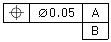
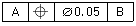
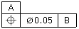
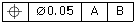
(정답률: 72%)
46. 기어의 도시방법에 대한 설명으로 틀린 것은?
- 기어의 도면에는 주로 기어소재를 제작하는 데 필요한 치수만을 기입한다.
- 피치원 지름을 기입할 때에는 치수 앞에 PCR(Pitch Circle Radius)이라 기입한다.
- 요목표의 위치는 도시된 기어와 가까운 곳에 정한다.
- 요목표에는 치형, 모듈, 압력각 등 이의 가공에 필요한 사항을 기입한다.
(정답률: 59%)
47. 리벳 이음의 제도에 관한 설명으로 바른 것은?
- 리벳은 길이방향으로 절단하여 표시하지 않는다.
- 얇은 판, 형강 등 얇은 것의 단면은 가는 실선으로 그린다.
- 형판 또는 형강의 치수는 “호칭 지름×길이×재료”로 표시한다.
- 리벳의 위치만을 표시할 때에는 원 모두를 굵게 그린다.
(정답률: 47%)
48. 유체를 한 방향으로만 흐르게 하여 역류를 방지하는 구조의 밸브는?
- 안전 밸브
- 스톱 밸브
- 슬루스 밸브
- 체크 밸브
(정답률: 65%)
49. 다음 중 벨트 풀리의 도시방법으로 틀린 것은?
- 벨트 풀리는 축 직각방향의 투상을 주투상도로 할 수 있다.
- 벨트 풀리는 대칭형이므로 그 일부분만을 나타낼 수 있다.
- 암은 길이 방향으로 절단하여 도시하지 않는다.
- 암의 단면형은 도형의 안이나 밖에 부분단면으로 나타낸다.
(정답률: 41%)
50. 나사의 도시 방법에서 가는 실선으로 그려야 하는 것은?
- 완전 나사부와 불완전 나사부의 경계선
- 수나사 및 암나사의 골
- 암나사의 안지름
- 수나사의 바깥지름
(정답률: 59%)
51. 축의 도시방법 중 바르게 설명한 것은?
- 긴 축은 중간을 파단하여 짧게 그릴 수 있으며 치수는 실제의 길이를 기입한다.
- 축 끝의 모따기는 각도와 폭을 기입하되 60°모따기인 경우에 한하여 치수 앞에 “C"를 기입한다.
- 둥근 축이나 구멍 등의 일부 면이 평면임을 나타낼 경우에는 굵은실선의 대각선을 그어 표시한다.
- 축에 있는 널링(knurling)의 도시는 빗줄인 경우 축선에 대하여 45°로 엇갈리게 그린다.
(정답률: 64%)
52. 다음 스프링에 관한 제도 설명 중 틀린 것은?
- 코일 스프링에서 코일 부분의 중간 부분을 생략하는 경우에는 생략하는 부분의 선 지름의 중심선을 가는 1점 쇄선으로 나타낸다.
- 하중 또는 처짐 등을 표시할 필요가 있을 때에는 선도 또는 항목표로 나타낸다.
- 도면에서 특별한 지시가 없는 한 모두 오른쪽 감기로 도시한다.
- 벌류트 스프링은 원칙적으로 하중이 가해진 상태에서 그리는 것을 원칙으로 한다.
(정답률: 65%)
53. 미터 사다리꼴 나사의 호칭지름 40㎜, 피치 7, 수나사 등급이 7e인 경우 옳게 표시한 방법은?
- TM40 × 7 - 7e
- TW40 × 7 - 7e
- Tr40 × 7 - 7e
- TS40 × 7 - 7e
(정답률: 67%)
54. 주어진 베어링 호칭에 대한 안지름 치수가 틀린 것은?
- 6312 → 안지름 치수 60㎜
- 6300 → 안지름 치수 10㎜
- 6302 → 안지름 치수 15㎜
- 6317 → 안지름 치수 17㎜
(정답률: 83%)
55. 스퍼 기어에서 피치원의 지름이 160㎜이고, 잇수가 40일 때 모듈(module)은?
- 2
- 4
- 6
- 8
(정답률: 89%)
56. 다음 그림은 용접부의 기호 표시방법이다. (가)와 (나)애 대한 설명으로 틀린 것은?
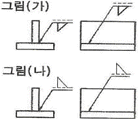
- 그림 (가)의 실제 모양이다. (한쪽 용접)
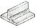
- 그림 (나)의 실제 모양이다. (양쪽 용접)
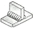
- 그림 (가)는 화살표 쪽을 용접하라는 뜻이다.
- 그림 (나)는 화살표 반대쪽을 용접하라는 뜻이다.
(정답률: 56%)
57. CAD시스템에서 마지막 점에서 다음 점까지의 각도와 거리를 입력하여 선긋기를 하는 입력 방법은?
- 절대 직교좌표 입력방법
- 상대 직교좌표 입력방법
- 절대 원통좌표 입력방법
- 상대 극좌표 입력방법
(정답률: 69%)
58. 다음 입·출력 장치의 연결이 잘못된 것은?
- 입력장치 - 키보드, 라이트펜
- 출력장치 - 프린터, COM
- 입력장치 - 트랙볼, 태블릿
- 출력장치 - 디지타이저, 플로터
(정답률: 67%)
59. 컴퓨터에서 CPU와 주변기기 간의 속도차이를 극복하기 위하여 두 장치 사이에 존재하는 보조 기억장치는?
- cache memory
- associative memory
- destructive memory
- nonvolatile memory
(정답률: 78%)
60. CAD시스템을 이용한 3차원 모델링 중 체적, 무게중심, 관성 모멘트 등의 물리적 성질을 구할 수 있는 것은?
- 와이어 프레임 모델링
- 서피스 모델링
- 솔리드 모델링
- 시스템 모델링
(정답률: 76%)